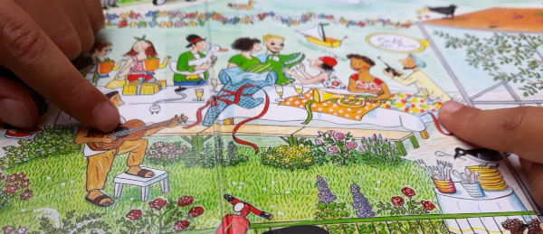

Grandir avec les livres.
Des temps de lecture et de jeu où les tout-petits découvrent les histoires avec leurs parents et les adultes qui les accompagnent.

L’accompagnement
Une place pour
chaque famille
Une comptine fredonnée, un album choisi par l’enfant ou une histoire dans une langue familière peuvent ouvrir la rencontre. Les parents peuvent écouter, chanter ou reprendre les jeux et les histoires qui plaisent à leur enfant.
Les séances laissent de la place aux langues parlées à la maison et aux récits que les familles souhaitent partager.
Les rencontres
Mes p’tits moments partagés
Une trentaine de minutes pour se retrouver autour d’albums, de comptines ou de petits jeux. Les rencontres peuvent avoir lieu en médiathèque, en structure petite enfance ou dehors, selon le projet.
Ce format a notamment été accueilli à la médiathèque Boris Vian de Chevilly-Larue, à la bibliothèque Nelson Mandela de Vitry-sur-Seine et dans le réseau de Choisy-le-Roi.
Sur le terrain
Des histoires en
plein air
En 2019, pendant Partir en Livre, des séances de lecture libre se sont déroulées à la sortie de deux accueils maternels de Chevilly-Larue. En attendant les parents, les enfants pouvaient s’installer dehors et choisir un album.

Contact
Imaginer une rencontre
Vous avez un lieu, un public ou une idée de projet ? Échangeons sur ce qui pourrait prendre forme ensemble.
Contacter Nathalie